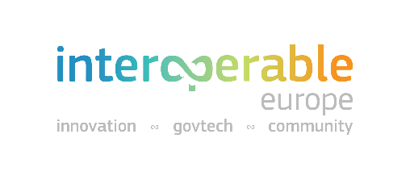
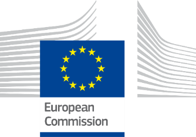
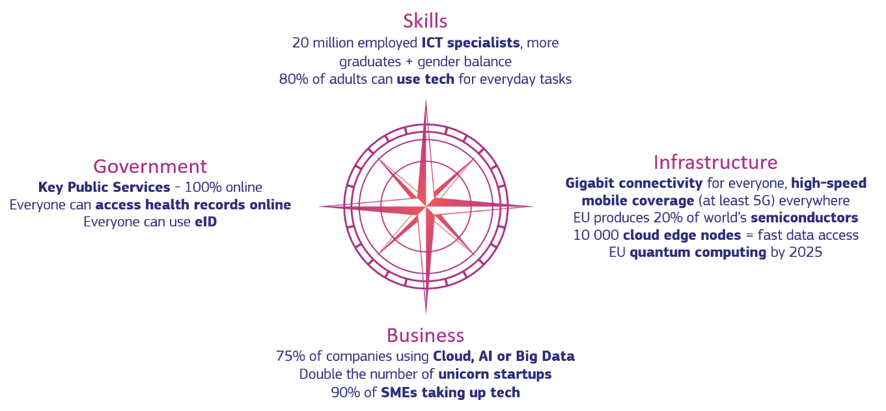
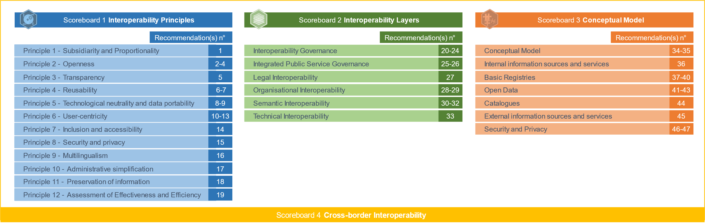
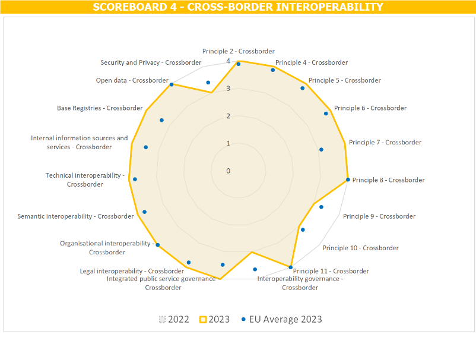
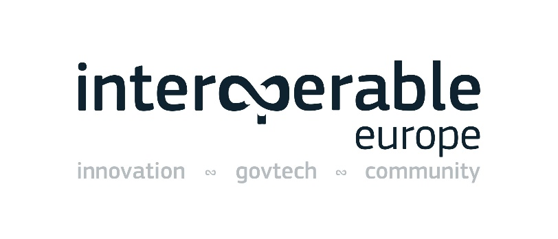

Table of Contents
Table of Contents

AUSTRIA
2024 Digital Public Administration Factsheet
Supporting document
Main developments in digital public administrations and interoperability
JULY 2024
1. Interoperability State-of-Play 3
2. Digital Transformation of Public Administrations 6
3. Interoperability and data 9
4. Digital Transformation of Public Services 15
7. Digital Public Administration Governance 26
8. Cross border Digital Public Administration Services for Citizens and Businesses 29
Icons Glossary | ||
Political Communication | Legislation | Infrastructure |
The Digital Decade policy programme 2023 sets out digital ambitions for the next decade in the form of clear, concrete targets. The main goals can be summarised in 4 points:

The production of the Digital Public Administration factsheets and their supportive documents support the objectives and targets of the Digital Decade programme. By referencing national initiatives on the digital transformation of public administrations and public services, as well as interoperability, they complement existing data and indicators included in the Digital Decade reports and related resources. They also highlight and promote key initiatives put in place or planned by EU countries to reach the Digital Decade’s targets.
In 2017, the European Commission published the European Interoperability Framework (EIF) to give specific guidance on how to set up interoperable digital public services through a set of 47 recommendations divided in three pillars. The EIF Monitoring Mechanism (MM) was built on these pillars to evaluate the level of implementation of the framework within the Member States. The mechanism is based on a set of 91 Key Performance Indicators (KPIs) clustered within the three scoreboards (Principles, Layers, Conceptual model and Cross-border interoperability), outlined below.
Starting from the 2022 edition, an additional scoreboard, Scoreboard 4, focusing on cross-border interoperability, has been incorporated. This scoreboard assesses the adherence to 35 Recommendations outlined in the EIF framework. Specifically, it encompasses Interoperability Principles 2, and 4 through 11 from Scoreboard 1, all recommendations pertaining to Interoperability Layers from Scoreboard 2, as well as Conceptual Model recommendations 36 to 43 and 46 to 47 from Scoreboard 3.

Source: European Interoperability Framework Monitoring Mechanism 2023
Each scoreboard breaks down the results into thematic areas (i.e. principles). The thematic areas are evaluated on a scale from one to four, where one means a lower level of implementation and four means a higher level of implementation. The graphs below show the result of the EIF MM data collection exercise for Austria in 2023, comparing it with the EU average as well as the performance of the country in 2022.
Source: European Interoperability Framework Monitoring Mechanism 2023
The Austrian results in Scoreboard 1 stand for an overall good implementation of the EIF Principles. Austria performs above the European average for Principle 12 (Assessment of Effectiveness and Efficiency). Potential areas of improvement relate to the implementation of Principles 1 (Subsidiarity and Proportionality) and 9 (Multilingualism) for which the score of 3 could be further improved to reach the European average. In particular, Austria could enhance its national interoperability frameworks and interoperability strategies alignment with the EIF (Principle 1 – Recommendation 1) and could increase the number of language resources proposed to users (Principle 9 – Recommendation 16).
Source: European Interoperability Framework Monitoring Mechanism 2023
Austrian’s scores in Scoreboard 2 illustrate an overall good performance of the country with scores of 3 and 4 in all the interoperability layers. Areas of improvement to strengthen the country’s implementation of the recommendations under Scoreboard 2 concern only interoperability governance. More specifically, with regard to the interoperability governance, Austria has a middle performance in the use of a structured, transparent, objective, and common approach to assess and select standards and specifications (Recommendation 22), and in a standardisation work (Recommendation 24).
Source: European Interoperability Framework Monitoring Mechanism 2023
The Austria results in relation to the Conceptual Model in Scoreboard 3 show a good performance of the country. Austria has a high performance in open data, base registries, internal information sources and services, conceptual model, and catalogues, performing better than the EU average in the latter two areas. To perfect its score on external information sources and services, Austrian public administrations could use more external information sources and services while developing European public services, when useful and feasible to do so (Recommendation 45). To increase its score on security and privacy, Austria could increase its efforts to put in place trust services according to the Regulation on eID to ensure secure and protected data exchange in public services (Recommendation 47).

Source: European Interoperability Framework Monitoring Mechanism 2023
The results of Austria on Cross-Border Interoperability in Scoreboard 4 show a very good performance of the country. Particularly, Austria has the maximum score of four for seven principles. However, Austria has still some margin for improvement in relation to multiple indicators where the country obtains a lower performance, also compared to the EU Average, such as Principle 9 (Multilingualism – Cross border), Principle 10 (Administrative simplification – Cross-border), interoperability governance, and security and privacy.
Additional information on Austrian’s results on the EIF Monitoring Mechanism is available online through interactive dashboards.
Curious about the state-of-play on digital public administrations in this country? Please find here some relevant indicators and resources on this topic: |
The Digital Austria Act, i.e. the digital work programme of the federal government, combines 117 measures and 36 digitisation principles to reshape digitisation in Austria. In light of the speed of the digital transformation and the many new application possibilities, the federal government’s digitisation programme needs to be updated to secure Austria’s prosperity in the future. To this end, the act focuses on the following areas:
Further details on the individual areas can be found on the website of the Digital Austria Act (attachment to the presentation by the Council of Ministers). In this context, applicable data protection principles and barrier-free accessibility are duly taken into account. Furthermore, one important element is the so-called ‘Digi-Check’, which is used to check whether laws are suitable for digitisation when they are reviewed. Another focus is the further development of the Digital Office into a smart government enabling simple and mobile access to all federal administrative services.
 Digitisation Strategy - Digital Action Plan Austria
Digitisation Strategy - Digital Action Plan Austria
The vision Digital Austria in 2040–2050 outlines the necessary values and characteristics of a digital responsible society, based on a series of guidelines and principles. It focuses on competitiveness, innovation, prosperity, climate protection, health and cultural heritage, and provides the necessary framework for the Austrian Digitisation Strategy (Digital Action Plan Austria or DAA).
The DAA was launched on 8 June 2020 by the Federal Minister of Austria and was developed together with experts in the fields of science, economy and public administration. By addressing the prerequisites for a successful digital transformation in Austria, the DAA is an evolving strategy that aims to successfully cope with the digital transition.
With the DAA, Austria aims to (i) make the ‘system Austria’ crisis-proof; (ii) enhance competitiveness; (iii) position Austria as a digital innovation region; (iv) make targeted use of data for innovation; (v) design education, training and continuing education as a digital competitive advantage; (vi) promote top digital research in a targeted manner; and (vii) facilitate digital communication between the State and its citizens.
In doing so, Austria pursues the goal to establish and further secure its role as a leading digital nation, and to guarantee and expand prosperity, job opportunities and quality of life in the long term. As such, the DAA is based on the fundamental consideration that digitisation is not a value in itself, but an enabler to achieve substantial progress in individual policy areas (e.g. climate, security, economic and cultural policy) from which the general public benefits.
The DAA consists of strategic action plans, which contain concrete measures and implementation steps on specific priority topics. Fostering the digital transformation in selected priority areas and improving user‑centric, modern eGovernment services are among the main objectives within the strategic action plans. The process for drawing up the digital strategic action plans is not only streamlined in close cooperation with the Chief Digital Officer (CDO) taskforce of the federal government but is characterised in particular by the close cooperation between the Federal Chancellery, responsible for digitisation, and the responsible Ministries.
In 2020, initial plans on the topics of data chances, resilience and economic growth were drawn up, followed in 2021–2024 by additional plans on the topics of digital sustainable economics, future of digital universities, digital talents, digitisation and tourism, future skills in public management, digital cultural heritage, digital sovereignty, smart farming, digital memory Austria and eHealth.
Until the end of 2024 the project and its present results will be consolidated, complemented where necessary and adapted to current challenges to calibrate the initial vision and next steps in the digitisation strategy.
 Digital Skills Austria Strategy
Digital Skills Austria Strategy
The Digital Skills Austria Strategy was developed in a broad dialogue process with more than 500 experts and stakeholders in all federal States. It was adopted by the Council of Ministers in July 2023. A skills package with eight strategic priorities and implementation projects was derived from the strategy to help promote digital skills in Austria. The focal points are the following:
 Federal eGovernment Strategy 2023 for Austria
Federal eGovernment Strategy 2023 for Austria
The Federal eGovernment Strategy 2023 for Austria was adopted on 7 June 2023 by the federal government. It was developed in a collaborative process with the relevant eGovernment stakeholders at national and regional level, and pursues an efficient implementation of eGovernment services.
The strategy is based on the basic premise that all businesses and citizens must be able to perform all the procedures of public administration quickly and easily, electronically and without any specific technical expertise. To achieve this goal, the Federal eGovernment Strategy promotes the involvement of and close cooperation between the federal State, cities and municipalities.
The first concrete implementation priorities are to be the broad introduction of ID Austria, the interconnection of service portals and the digital sovereignty.
 Berlin Declaration on Digital Society and Value-Based Digital Government
Berlin Declaration on Digital Society and Value-Based Digital Government
In December 2020, the Austrian government signed the Berlin Declaration on Digital Society and Value-Based Digital Government, thus re-affirming its commitment – together with other European Union (EU) Member States – to foster digital transformation in order to allow citizens and businesses to harness the benefits and opportunities offered by modern digital technologies. The Declaration aims to contribute to a value-based digital transformation by addressing and strengthening digital participation and digital inclusion in European societies.
The eGovernment Act, the centrepiece of Austrian eGovernment law, entered into force on 1 March 2004 and was last amended on 31 December 2020. Austria was one of the first EU Member States to adopt a comprehensive legislation on eGovernment. This act serves as the legal basis for eGovernment instruments and components. Many mechanisms - such as the Citizen Card (Bürgerkarte, in the future eID or ID Austria), sector-specific personal identifiers and electronic delivery - can also be put to use in the private sector.
The most important principles of eGovernment law are:
The latest amendments to the eGovernment Act were made in consideration of the technical developments associated with a simplified smartphone-based use of the eID, as well as to increase the data quality and widen the use of the eID. They also introduced the legal basis for a digital driver’s license for eID holders.
Another amendment concerning the Supplementary Registry for other data subjects was published in the Austrian Federal Official Journal in the summer of 2022 and entered into force on 28 July 2023.
 General Administrative Procedures Act
General Administrative Procedures Act
The General Administrative Procedures Act lays down the basic principles of administrative procedures. Article 13 is relevant to eGovernment in that it regulates the ways in which public authorities and citizens can communicate with each other, such as the transmission of applications by email or web forms. The authority’s website specifies the addresses to which application forms can be sent, whether an electronic signature is needed and which formats are recommended or required for the application.
Since 1 January 2011, documents issued by public authorities require a handwritten signature, a certification or an official signature. All electronic copies of paper documents from public authorities are required to have an official signature. The official signature is an advanced electronic signature including specific elements to certify the official origin of the document.
 Web Accessibility Act
Web Accessibility Act
The Austrian Web Accessibility Act entered into force on 23 July 2019 and implements the Web Accessibility Directive. It defines the accessibility requirements for federal websites and mobile applications so that they are more accessible for users, especially for people with disabilities. In addition to the federal level, nine different acts implement the Web Accessibility Directive in the respective federal States.
The competent authority on the federal level is the Austrian Research Promotion Agency (FFG), which monitors compliance with the accessibility requirements of websites and mobile applications of public sector bodies in Austria (on federal level and also for seven out of the nine federal States). In December 2021, the FFG published the first monitoring report. The next report is due at the end of 2024.
 Service of Documents Act
Service of Documents Act
The Service of Documents Act, last amended on 29 December 2022, governs the delivery of all documents, such as official notices, which government authorities are required by law to send out.
In both electronic and paper-based circumstances, a differentiation is made between deliveries that require proof of delivery, by which the recipient confirms the delivery with a signature, and deliveries where no proof is required. The proof of delivery is carried out through an electronic delivery service. This service is available from delivery service providers approved by the Federal Chancellor. A list of these delivery service providers is published by the Ministry online. The service allows customers (citizens and businesses) to register with their Citizen Card to confirm that they want to receive administrative documents electronically. Registering with a delivery service is sufficient notice to receive administrative documents. The use of an electronic delivery service is not obligatory for citizens but is mandatory for businesses.
Since 2019, the display module MyPostbox (Mein Postkorb), in accordance with Article 37b of the Service of Documents Act, has been bundling documents from different delivery systems into a common view and allowing for a single point of registration. This service is available through registration to the platform oesterreich.gv.at and through the app Digitales Amt. Businesses can use this service via the Business Service Portal.
No particular initiatives in this field have been reported to date.
 Austrian Interoperability Framework
Austrian Interoperability Framework
The establishment of the Austrian Digital public services has been an important step representing a common goal among the different initiatives to which the federal government has agreed to.
The approval of the Austrian Interoperability Framework (AIF) in January 2015 set a mutual goal to guide, promote and support the delivery of Austrian public services by fostering cross-border, cross-organisation and cross-sector interoperability. The framework addresses issues such as its underlying principles, the conceptual model for public services, the interoperability levels, the interoperability agreements and the interoperability governance.
More specifically, the purpose of the AIF is:
This non-technical document is addressed to all those involved in defining, designing and implementing Austrian public services. The AIF should be taken into account when making decisions on Austrian public services that support the implementation of Austrian policy initiatives. It should also be considered when establishing public services that in the future may be reused as part of the Austrian public services.
Open Data
Open Government Data
Fostering the provision and use of open government data to increase transparency and create new opportunities for companies is a major cornerstone of the Austrian government programme, titled ‘In Responsibility for Austria - Government Programme 2020–2024’. The Federal Chancellery is working on the implementation of the set goals.
 Datahub.Tirol
Datahub.Tirol
With datahub.tirol the province of Tyrol actively promotes the creation of data spaces, primarily based on open data, in particular in the sectors of tourism, energy and mobility. datahub.tirol is linked to the Data Intelligence Offensive (DIO) and GAIA-X Hub Austria.
Constitutional Law on Access to Information
The Constitutional Law on Access to Information (Auskunftspflichtgesetz) became effective on 1 January 1988. This law contains provisions on access to public information at federal and regional level. It stipulates a general right of access and obliges federal authorities to answer questions regarding their areas of responsibility, insofar as this does not conflict with a legal obligation to maintain secrecy. However, it does not permit citizens to access documents, but only to receive answers from the government on the content of information. The nine Austrian regions (Länder) have enacted laws that place similar obligations on their authorities.
From September 2025 Austrian citizens will have a constitutionally guaranteed right to information and a Freedom of Information Act. With the entry into force of this act on 1 September 2025, the above-mentioned acts on the access to information will expire. In the future, public bodies will be obliged to publish information of general interest, such as commissioned expert opinions, studies and contracts, and make them accessible via a central information register.
 Federal Reuse of Public Sector Information Act
Federal Reuse of Public Sector Information Act
Directive (EU) 2019/1024 on open data and the re-use of public sector information (PSI Directive) was transposed at federal level through the Federal Reuse of Public Sector Information Act 2022 (Informationsweiterverwendungsgesetz, IWG). It entered into force on 28 July 2022. To transpose the PSI Directive completely, pertinent legislation was passed also in all nine Austrian provinces, complementing the federal law (9+1).
In the future, official documents will be sent mainly by electronic means. The electronic delivery service allows public administrations and citizens to exchange messages with proof of sending and receipt.
In 2008 and 2009, the first two privately run delivery services that complied with legal regulations and technical specifications for electronic delivery became operational. Currently, five privately run delivery services are active on the market, with 5.9 million deliveries in 2023. At the end of the same year, 578 670 legal entities and 371 429 natural persons were registered for the electronic delivery service.
The Electronic Delivery System - which can be seen as an evolution of the old system - was launched on 1 December 2019. The system brings many advantages to citizens, businesses and public authorities. Just like the letterbox in the paper world, recipients only need one system to receive official notifications in the electronic world. As such, the revised electronic delivery offers great saving potential for public authorities, citizens and businesses (e.g. postage costs, printing costs and time). This central system is called MyPostbox (Mein Postkorb). The display module MyPostbox bundles documents from different delivery systems into a common view and allows for a single point of registration. This service is available through registration to the platform oesterreich.gv.at and through the app Digitales Amt. Businesses can use this service via the Business Service Portal.
 Electronic File System
Electronic File System
The Electronic File System (ELAK) has been introduced to replace paper-based filing and archiving in all Austrian Ministries. An electronic file is created for every written request requiring an answer and every internal project of possible future interest. In this way, every procedure can be easily audited anytime by viewing the file. At the federal level, ELAK means that many procedures can now be conducted more efficiently, facilitating inter-administrative transactions, which can now be processed using just one medium. The introduction of ELAK has thus brought about significant savings.
At the beginning of 2020, an Electronic File System was launched with additional useful features (e.g. team rooms for cross-sector collaboration with private sector partners) and a modernised design.
 Data Intelligence Offensive
Data Intelligence Offensive
The Data Intelligence Offensive (DIO) aims to promote business models for the exchange and value creation of data according to the strictest ethical and legal standards. Within the DIO, several working groups and use cases have been established with a view to shaping data spaces in various sectors, e.g. health, art and culture, geography, construction and finance.
Base Registries
The following table lists the Austrian base registries:
National | |
Business and Tax | The legal bases for the Central Commercial Registry (ZGW) are the Commercial Code (Unternehmensgesetzbuch, UGB) and the Commercial Registry Act (Firmenbuchgesetz, FBG). The latter does not exactly provide a clear definition of the registry, but Article 1 states that the Central Commercial Registry consists of the general ledger and a collection of documents. The Registry is used to record and disclose facts which are to be entered under this act or other legal regulations. The act also includes provisions on, among others, which entities are intended to be registered in the general ledger, the collection of documents, the notification requirements, the database of the Central Commercial Registry and the judicial administration measures. |
Transportation / Vehicles | In the case of the Central Registry of Vehicles (KZR), the main relevant law is the Motor Vehicles Act (Kraftfahrgesetz, KFG) of 1967, which is a very extensive law covering everything related to motor vehicles. |
Land | The main piece of legislation underpinning the Land Registry is the General Land Registry Law (Allgemeines Grundbuchgesetz, GBG), which, however, does not provide a clear definition of the registry. The law governs the types of registration, the information regarding the certificates, the effect of the registration, the rectification of data, etc. The Land Registry is public, and, therefore, anyone may access it and obtain extracts in the presence of an official. |
Population |
The main legislation for the Central Civil Registry (ZPR) is the Civil Status Act of 2013, Section 2, Articles 43-45, which establishes the Central Civil Registry as a public registry. Moreover, it states that the civil status authorities may only use personal data when this is necessary to fulfil the tasks assigned to them. The act also provides information regarding the use of the data from the registry, queries, certificates, the structure of the registry, and the keeping and exhibition of the documents.
For the Central Registry of Residents (ZMR), the most relevant pieces of legislation are Articles 16, 16a and 18 of the Notification Act (MeldeG), and Articles 15 and 17 of the Registration Act Implementing Regulation (MeldeV). The Notification Act states that the Central Registry of Residents is public and should be managed as a joint information system, and provides details on the authorised use of data obtained from it. The latter act specifies the administrative charges. |
Other | See below the details on the Austrian Federal Registry Map. |
Sub-national | |
Base Registries | |
 Registry and System Network
Registry and System Network
The Registry and System Network (Register- und Systemverbund) is a Once-Only solution/information hub acting as basis for the targeted reduction of the administrative burden (information obligations). Its creation was agreed by a decision of the Austrian Council of Ministers on 6 October 2020.
The Registry and System Network represents a further important step towards user-centric and efficient eGovernment. The available interfaces allow the data protection‑compliant use of existing data. The data records will not have to be stored or centralised, and will remain within the responsible bodies, while the high Austrian data protection level remains untouched.
The Austrian Federal Registry Map is a map of the country’s registries. Providing a general overview of national registries, the visualisation also provides detailed information about each public administration responsible for the respective registry, the category of information they contain and a description of the main content of each registry. Users can also see the legal basis for each registry, any interfaces with other registries and information about the body responsible for administering the registry. The map is intended to give an overview of existing (federal) data and form a basis for further evaluation of possible applications in relation to the Registry and System Network.
Data Platforms and Portals
The following table lists the Austrian data platforms and portals infrastructures:
Oesterreich.gv.at (former HELP.gv.at) | As the one-stop eGovernment platform for citizens, oesterreich.gv.at provides information on all interactions with Austrian authorities required in the most frequent life situations – such as pregnancy, childbirth, marriage or housing – and allows to complete some of these procedures electronically. It can be accessed 24/7 to obtain useful information on how to deal with different authorities in over 200 life situations. The portal constitutes an interface between authorities and citizens, with an emphasis on transparency, user-friendliness and clarity of information. Since 22 March 2019, the website has been expanded with the introduction of new services for citizens (e.g. baby point and relocation). In addition, in March 2019 a chatbot named Mona and a mobile app were launched to improve the service quality of Austria’s most used eGovernment portal for citizens (> 89 million visits in 2022). The Digital Office App - which is the mobile complement to the online platform oesterreich.gv.at - was launched to facilitate a centralised, mobile and easy access for citizens to the most important administrative services, as an important step to allow for the use of eGovernment anytime and anywhere. The app had already been downloaded almost 2.1 million times by March 2024. The Digital Office App supports a single sign-on functionality and is planned to be expanded into an ID platform to include new functionalities (e.g. electronic driving licence or registration certificate). |
Austrian Business Service Portal usp.gv.at | The Austrian government puts very strong emphasis on delivering public services using the Once‑Only principle, and offering information and transaction services, both for domestic and cross-border transactions, to reduce administrative burdens for businesses. With more than 70 million page views per year, the Austrian Business Service Portal (Unternehmensserviceportal, USP) serves as a single-entry point for businesses to administrative services. Information about the most important life events for businesses are available in German and English, with a newly added content space focusing on starting a business in Austria (https://startup.usp.gv.at/). As a result of its expansion, this one-stop eGovernment platform for businesses already offers more than 120 public service procedures via single sign-on. New and redesigned eGovernment services have been integrated in the Business Service Portal, like electronic business formation and eDelivery, with a view to strengthening and fostering economic growth in Austria. With regard to the electronic formation of businesses, 3 117 online business formations were recorded via the Business Service Portal in 2023. Moreover, the ‘call for tenders search’ service allows, without additional registration, to search for and view in one place all calls for tenders published in accordance with the Austrian Federal Procurement Act, giving small and medium-sized enterprises (SMEs) free and unlimited access to tenders from 7 000 public authorities. More in general, this accelerated implementation of digital tools facilitates SMEs development by enabling user‑centred, seamless and transparent service delivery, and facilitating mobility and use of key technologies. |
Legal Information System of the Republic of Austria | The Legal Information System of the Republic of Austria (RIS) is an electronic database operated by the Austrian Federal Chancellery. It serves for the publication of authentic legal texts as an alternative to the paper‑based Federal Official Journal (Bundesgesetzblatt, BGBl) and provides information on current laws in the Republic of Austria to citizens and businesses (e.g. in the form of a consolidated version of the Austrian Federal Law). |
Open Government Data Metaportal (data.gv.at) | With the implementation and start of the Austrian one-stop Open Government Data Metaportal in 2012, Austria moved closer to its open government data goal. Data.gv.at, a central catalogue for open government data, was launched to allow users to quickly find data via a single electronic point of contact. Open government data has the potential to promote social, cultural, scientific and economic progress. For that reason, the Austrian government has made it possible to develop new products and services through the reuse of non-personal public sector information. Moreover, open government data may enhance the transparency of administrative activities, improve collaboration between politics, administration, business, research and citizens, and strengthen democracy. |
FinanzOnline Portal | The FinanzOnline Portal provides a one-click link to the Austrian tax administration. Using FinanzOnline, Austrian citizens can, for instance, file their tax return electronically from home 24/7, thus saving both time and money. Furthermore, assessment notices can be delivered electronically upon request in just a few days. |
GESUNDheit.gv.at Portal | The guiding principle of the health portal GESUNDheit.gv.at is to provide information to people to ensure and expand their participation and choices in healthcare (i.e. patient empowerment). Accordingly, the My Electronic Health Records Portal provides citizens with quality-assured information about the healthcare system and other benefits. Besides medical information, the portal also contains information on the structure and organisation of health services. |
Online Security Portal | On the Online Security Portal citizens can find comprehensive information on the topic of security of information and communication technology (ICT). The portal’s goal is promoting an ICT security culture in Austria by raising awareness among the target groups concerned and by providing specific recommendations for action to each target group. |
Grants4Companies | In 2022, a new application called Grants4Companies was developed and released within the Business Service Portal. It offers registered companies an automatically derived list of suitable grants. Grants4Companies uses methods from symbolic AI to evaluate formalised eligibility criteria based on the available company data retrieved from the Austrian Once-Only Platform dadeX, with user consent to obtain the required data from the registries of the public administration. The application automatically determines appropriate grants as logical consequences of the formalised rules and available data. |
Public Procurement Platform | The Public Procurement Platform (PEP-Online) gives the opportunity to public buyers in Austria and Croatia to electronically provide interested suppliers with information about tender notices. Upon registration, buyers have to enter the required information about a public procurement procedure into the system. A subsequent electronic verification ensures that all data are consistent and valid. Following this, buyers must specify the date and the media to be used for the publication, and upload the tender documents. After registration, interested suppliers are able to search the online database, view and download tender documents, visit a buyer’s profile or define automatic search profiles. |
Electronic Purchasing System | The Electronic Purchasing System (Bundesbeschaffung GmbH, BBG), which uses web technology by the Federal Procurement Agency, allows its customers to manage electronic framework agreements and contracts. The entire purchasing process (from raising a purchase requisition, approving workflows and completing the purchase order to dispatching the purchase order to the vendor) is covered within the BBG Portal. The Portal simplifies and speeds up internal processes by using flexible, customer-oriented electronic workflows. Furthermore, it improves the quality of business process documentation for registered users and their organisations. |
eGovLabs - Joinup | Many eGovernment applications use modules for online applications (MOA), i.e. software components that encapsulate all the procedures needed to carry out specific functions, including verifying and affixing electronic signatures, reading identification data from the Citizen Card and delivering notifications from authorities. For this reason, software is continually maintained in a collaborative process and upgraded to fulfil new requirements. To that end, the eGovLabs platform has been created for the developer community, so that a structured cooperation can be established when it comes to feature and change requests, error reports and enhancements. The modules and all their versions, including the source code, are available on this open source repository. To underline the European dimension and cross-border usability, eGovLabs has been shifted to the EU Joinup open source platform. |
Cross-border Infrastructures
The following table lists the European cross-border infrastructures of which Austria is part of:
European Business Registry | Austria is part of the European Business Registry (EBRA). |
EUCARIS | Austria is a member of the European Car and Driving Licence Information System (EUCARIS) and the European Criminal Records Information System (ECRIS). It also has full connection to the European Land Information System (EULIS). |
TESTA | The Trans European Services for Telematics between Administrations (TESTA) network is used for a number of cross-border use cases. |
EU Digital Wallet | Austria is part of the EU Digital Identity (EUDI) Wallet Consortium. |
European Blockchain Services Infrastructure (EBSI) | Austria participates in the project to build a European Blockchain Services Infrastructure (EBSI). |
 QC-Platform
QC-Platform
Austrian science institutes and businesses are (lead) partner in nearly all quantum communication infrastructure (QCI) projects and studies going on in the European context. In close coordination with EuroQCI, Austrian organisations are also building support platforms and hosting workshops for all EuroQCI Member States to foster the EU initiative for a common QCI in the EU. The Federal Ministry for Climate Action, Environment, Energy, Mobility, Innovation and Technology represents Austria in the EuroQCI initiative.
The latest projects carried out are QKD4GOV, funded by the national funding programme KIRAS (to secure governmental data and communication), and the participation in the Digital Calls for EuroQCI.
A strategy for communication and community-building to raise awareness as well as the deployment of QCI has already been developed and implemented in Austria. Furthermore, an advisory board and an industry group for QCI activities, and for cross-border cooperation and projects have been set up.
Once-Only Portal
The implementation of a Once-Only Portal (composed of the Registry and System Network, and the Information Obligation Database) as basis for the targeted reduction of administrative burdens (information obligations) was agreed by a decision of the Austrian Council of Ministers on 6 October 2020.
The Registry and System Network represents an important further step towards user-centric and efficient eGovernment. The available interfaces will allow the data-protection compliant use of existing data. The data records will not have to be stored or centralised and will remain within the responsible bodies, while the high level of data protection remains untouched.
The information hub for the automatic exchange of data and evidence between public authorities on both EU and national level (according to the Single Digital Gateway Regulation) was set up. An information obligation database provides an overview of already available data from the authorities that arise from companies’ information obligations to promote the identification and elimination of redundancies in corporate reporting, and to serve as a basis for new reforms and data optimisation.
The latest amendment of the Business Service Portal Act - that entered into force on 27 July 2021 - provides the necessary legal basis for the automated data exchange and implementation of the Once-Only principle.
Once-Only Principle
The federal government has identified the Once-Only principle, and herewith the reduction of administrative burdens for citizens and companies, as a key issue to be addressed in the current legislative period (2020–2024). The principle is applied through several measures to alleviate the burden of information obligations on businesses and citizens, that should provide their data only once to the administration.
Thanks to the smart use of back-office data available to a growing number of public authorities, it has become possible to provide citizens with ‘no-stop’ procedures in which visits to or contacts with authorities have been eliminated entirely. For example, Austria grants a family allowance for which no application is necessary, i.e. citizens automatically receive the benefits that they are entitled to without having to complete or send in any form. As a result, since the implementation of the measure in May 2015, families have automatically received the allowance granted at the birth of a child without having to apply for it. Overall, an estimated 80 000 families a year benefit from this ‘no-stop shop’ solution.
At the same time, the Austrian government places strong emphasis on improving the framework conditions for companies. This includes taking concrete measures to reduce the information obligations for businesses, thus alleviating their administrative burden. Following the adoption of the Business Service Portal Act - that entered into force on 27 July 2021 - the Once-Only Platform was implemented, including the Registry and System Network (dadeX - Digital Austria Data Exchange) and the Information Obligation Database. Based on this infrastructure, the following use cases have been implemented since the second quarter of 2022:
Other use cases will follow in the near future.
eInvoicing
The provisions of Section 5 of the Austrian Information and Communication Technologies Consolidation Act of 2012 mandate that all contracting partners of the federal government, including foreign contracting partners, must submit only structured electronic invoices for the provision of goods and services to government departments. eInvoicing is mandatory only for the federal government, with a few exceptions.
Austria mandates the use of the Federal Service Portal, the central processing eInvoicing platform of the federal government, to receive eInvoices. The portal provides the authentication services necessary for the submission of eInvoices and does not require further use of the electronic signature.
European Standard on eInvoicing
A specific federal plan for the implementation of the European standard on eInvoicing has been put in place. The following formats are accepted: ebInterface, UBL 2.0 and 2.1, AustroFIX and CII D16B.
eHealth and Social Security
 Health Telematics Law
Health Telematics Law
The Health Telematics Law, last amended on 28 October 2021, was put forward by the Federal Ministry of Health to secure the transmission of sensitive patient data. The law further defines the security measures already contained in the Data Protection Law of 2000. The government developed the strategy in this field together with the public administrations, as well as with the regional and local authorities.
Other Key Initiatives
 Citizens’ Right to Electronic Correspondence with the Public Administration
Citizens’ Right to Electronic Correspondence with the Public Administration
On 1 January 2020, the right to electronic correspondence with authorities (according to Article 1a of the eGovernment Act) entered into force. Thanks to that, citizens may now handle their contacts with the authorities entirely electronically.
 Research Organisation Act
Research Organisation Act
The Research Organisation Act was amended on 16 May 2018, 24 July 2020 and 13 December 2021 to facilitate the use of information in public registries for research purposes.
 Delivery Service Regulation
Delivery Service Regulation
The Delivery Service Regulation further defines the admission standards that are provided for by Article 30 of the Service of Documents Act. These standards include criteria for assessing the technical and organisational ability of delivery service providers and, in particular, the reliability of data protection aspects. The technical requirements that are to be fulfilled by delivery services are contained in an annex to the Delivery Service Regulation and are to be published online.
The Delivery Forms Regulation defines the forms for the first and second notifications of the deposit of an official document, which are sent electronically, as well as for the third and final notifications, which are sent by postal delivery to the recipient’s address if one has been provided.
On 12 April 2017, the Austrian Deregulation Act 2017 was published, aiming to substantially reduce administrative burdens for citizens within the public administration.
 Digital Office Regulatory Framework
Digital Office Regulatory Framework
The Digital Office (Digitales Amt) project was launched with a decision of the Austrian Council of Ministers of 15 January 2019 as a further important step to ensure that citizens’ administrative procedures, as well as their contacts with public authorities, can take place fully electronically. In this context, the federal government focuses on creating a modern legal framework for the development, testing and implementation of new/selected inter-ministerial electronic administrative processes and services (with broad stakeholder involvement).
eCommerce Act
The eCommerce Act (eCommerce Gesetz, ECG), which came into force on 1 January 2002, implements Directive (EC) 2000/31 on electronic commerce and deals with certain aspects of information society services. According to the act, such information society services are, inter alia, online distribution, online information, online advertisement, access functionalities and search engines. The act applies to virtually all services provided on the internet. It establishes the principles of freedom of service provision and country of origin, and provides for certain information obligations for providers of information society services to the benefit of their (potential) customers.
 Business Service Portal Act
Business Service Portal Act
The Austrian Business Service Portal Act regulates the establishment and operation of a central internet service portal for companies (Business Service Portal - usp.gv.at) to support the electronic exchange of information and electronic transactions between participants. It also regulates the operation of an internet service portal for citizens (Citizen Service Portal - oesterreich.gv.at), which provides information, support and online administrative procedures.
In 2021, the Business Service Portal Act was amended to implement a Once-Only platform with the aim to minimise existing administrative burdens concerning information obligations for citizens or companies and simplify the technical framework for the exchange of information between different authorities.
Public Procurement
 Public Tenders
Public Tenders
According to the 2018 Federal Public Procurement Act (Bundesvergabegesetz, BVergG 2018), that entered into force on 18 April 2019, all public tenders in Austria are announced in the one-stop eGovernment platform for businesses, i.e. the Business Service Portal. This gives SMEs free and unlimited access to tenders of 7 000 public authorities. A free tender search has been available since March 2019.
The Federal Public Procurement Act was adopted on 20 August 2018 and substituted the Federal Procurement Act which entered into force on 1 February 2006, replacing the Federal Procurement Act 2002 and repealing the eProcurement Regulation 2004. The Federal Public Procurement Act 2018 finally transposed all EU public procurement directives into national law, including their provisions regarding eProcurement.
 Public Procurement Promoting Innovation
Public Procurement Promoting Innovation
In 2011 Austria launched an initiative on Public Procurement Promoting Innovation (PPPI). The central element is the PPPI Service Centre (IÖB-Servicestelle), that acts as a network and support point for all innovators in the public administration. The PPPI Service Centre builds bridges between innovative European SMEs or start-ups and public institutions, and offers a free service portfolio of seminars and workshops, as well as the PPPI Innovation Platform.
The PPPI initiative helps to support innovative solutions from start-ups, young companies and small businesses through orders from public institutions. Due to the digitalisation of services and processes in public administration, the potential for the application of new technologies such as AI and blockchain in the area of eGovernment is enormous.
 Digital Competence Framework for Austria - National Reference Framework
Digital Competence Framework for Austria - National Reference Framework
The Digital Competence Framework for Austria (DigComp 2.3 AT) is based on the European Reference Framework for Digital Competences (DigComp 2.2). It is used to classify and compare digital skills. More in detail, the Digital Competence Framework for Austria divides digital competences into six areas and eight competence levels. The establishment of a national reference framework, aligned with DigComp 2.2, has been a key action to set a standardised benchmark for digital competencies, facilitating consistency in education and training assessments.
Austria was part of the pilot project (the European Digital Skills Certificate, EDSC) together with four other Member States (Finland, Spain, Romania and France). The results of the pilot are incorporated into the EDSC study and the establishment of an operational model. The goal is to develop an EDSC quality label for digital competence tests based on the Digital Competence Framework.
 Digital Skills Initiative
Digital Skills Initiative
In order for Austria’s economic and innovative strength to remain robust and continue to grow in the face of digitisation, both professionals and citizens need to be fostered in building up the necessary level of skills to keep up in a digital world. The future challenge is to reach as many people as possible and to provide them with attractive, high-quality educational opportunities. Building on existing projects, the Federal Chancellery aims to implement an integrated programme to close the digital skills gap in Austria, the so-called Digital Skills Initiative (Digitale Kompetenzoffensive für Österreich). In the initiative, existing projects are to be coordinated, targeted, further developed and supplemented by four specialist Ministries:
 Digital Competencies Austria Strategy
Digital Competencies Austria Strategy
The Digital Competencies Austria Strategy was published on 13 June 2023, offering a comprehensive competence package, ranging from workshops for basic digital competencies to a global and standardised competence framework for digital skills.
The strategy aims to make optimal use of the opportunities of digitisation through better digital competences. Its core, which was developed in a broad stakeholder process with more than 500 experts and stakeholders in all federal provinces, is the Digital Skills Package for Austria. The package is intended to strengthen digital competences throughout Austria through targeted measures in strategic focus areas, from basic digital competences for the general population to top digital qualifications for the economy.
 Digital Everywhere / Digital Everywhere Plus
Digital Everywhere / Digital Everywhere Plus
The Digital Everywhere (Digital Überall) Programme comprises a total of around 4 500 workshops for basic digital skills in 2024. The aim of these initiatives is to teach basic digital skills by transforming places such as youth centres, music clubs and retirement homes into places of learning, focussing on low threshold skills transfer. The measure is intended to reach all target groups not attending traditional learning centres, with skills mediators going directly to the target groups’ places of residence and offering their training measures there.
Differently, the Digital Everywhere Plus (Digital Überall Plus) Programme offers the opportunity for in-depth training and further education, with modular courses especially designed for those who want to further develop their digital skills.
 Massive Open Online Course
Massive Open Online Course
Updated courses on internet competences have been implemented at teacher training colleges. The aim is to train educators to use digital media in their lessons. The courses include eight different topics: (i) digital world for children and adolescents; (ii) behaviour when using a computer and internet; (iii) online communication; (iv) evaluation of online sources and copyright; (v) digital devices in school; (vi) data protection; (vii) dealing with denigration on the internet; and (viii) cyberbullying and hate mailing.
The SourcePIN Registry Regulation specifies the tasks of the SourcePIN Registry Authority which are necessary for the implementation of the eID concept (formerly Citizen Card concept) and the cooperation with its service providers. The main provisions deal with the following:
The new SourcePIN Registry Regulation 2022 regarding the transition from the previous Citizen Card system to ID Austria (eID) was enacted in June 2022.
 eGovernment Sector Delimitation Regulation
eGovernment Sector Delimitation Regulation
For the purpose of generating ssPINs, each public sector data application needs to be assigned to a sector of State activity. The eGovernment Sector Delimitation Regulation defines the sectors and the sector identifiers.
 Supplementary Registry Regulation
Supplementary Registry Regulation
The Supplementary Registry Regulation plays an important role in the implementation of the eID concept, as it enables natural persons and other involved parties who, due to legal restrictions, are not permitted to be entered into the primary registries, to be registered in the Supplementary Registry.
The Supplementary Registry is comprised of two registries: one for natural persons and one for other concerned parties. The eGovernment Act allows the SourcePIN Registry Authority to take over the duties of service provider from the Ministry of Interior for the Supplementary Registry for natural persons and from the Federal Chancellery for the second Supplementary Registry.
The Supplementary Registry Regulation 2022 regarding the transition from the previous Citizen Card system to ID Austria (eID) was enacted in June 2022.
 Signature and Trust Services Act
Signature and Trust Services Act
Through the creation of a new EU-wide harmonised legal framework for trust services, the Signature and Trust Services Act (SVG) was rescinded and a new accompanying law implementing the Regulation on electronic identification and trust services (eIDAS Regulation) was issued on the topic of trust services.
The SVG regulated those areas in which the directly applicable eIDAS Regulation gives Member States the possibility of issuing national regulations. In particular, this concerns regulations or specifications in the areas of trust service providers, supervision, formal aspects, liability and penalties in the event of non-compliance with the specifications of the eIDAS Regulation. Although the SVG applied to all trust services, the creation, validation and preservation of electronic signatures continue to be the core. It therefore was possible to sign contracts electronically with an electronic signature with the same effect as if the contract were signed by hand. In addition, an important step for consumer protection was made with the SVG: companies could no longer exclude in hidden clauses the acceptance of the electronic signature and thus, for example, prevent electronic terminations of subscriptions.
The latest amendments to the act, made on 17 May 2018 and 27 December 2018, regarded the General Data Protection Regulation (GDPR).
 Portal Group
Portal Group
The Portal Group is a link-up of administrative portals, and the basic infrastructure for the authentication and authorisation of public sector employees when accessing restricted online resources. By implementing the Portal Group protocol, the user management of shared eGovernment applications can be radically simplified, providing a single sign-in for users. The federal administration portal operators are obliged to implement the Portal Group agreement, building a web of trust. Participating organisations can rely on their own local user administrations to manage access to external eGovernment applications.
 ID Austria
ID Austria
Public authorities must be able to verify a person’s identity to make their procedures secure and traceable. An electronic tool to uniquely identify citizens and businesses is therefore necessary. Electronic identification is ensured by ID Austria (previously, the Citizen Card or Bürgerkarte), which can be used to sign documents securely and electronically. The digital signature is covered by law and protects against unwanted access and changes to signed content. As a central element for secure online processes, ID Austria has been given the highest priority, and is strongly anchored in both the Government Programme 2020–2024 and the Austrian Digitisation Strategy (Digital Action Plan Austria or Digitaler Aktionsplan Austria).
ID Austria also provides a mobile phone solution (the former Handy-Signatur). This mobile eIDAS-compatible version of the Austrian Citizen Card went online in the piloting phase in January 2021. Since then, it has been available for the public through selected registration offices around Austria. ID Austria went into full operation on 5 December 2023.
Over 3.8 million people already use an eID in Austria and most of them use their eID via mobile phones. Over 2.3 million of them are already using ID Austria (March 2024). After activating the Austrian eID once, citizens can use the single sign-on functionality of the Digital Office App (i.e. the mobile complement to the national One-Stop eGovernment Portal for citizens), and benefit from even more flexibility and usability.
Austria positively completed the eIDAS prenotification process and peer review for ID Austria on 21 February 2021 and formally notified ID Austria with assurance level ‘high’.
Signature Verification
The Signature Verification (Signaturprüfung) service is a web application also enabling to verify electronic signatures without installing a specialised software. The supported signatures conform to internationally standardised formats, such as XMLDSIG and CMS, as well as formats used in Austrian eGovernment applications (e.g. PDF-AS). The user interface is both in German and English, depending on the browser settings. To ensure confidentiality of communication, the service is encrypted.
Austrian Cybersecurity Strategy
In December 2021, Austria adopted the Austrian Cybersecurity Strategy (Österreichische Strategie für Cybersicherheit 2021, ÖSCS). In addition, an implementation catalogue, including concrete measures for public and private entities, was adopted in August 2022, and will be updated and published biannually. Both documents are published on the website of the Austrian Federal Chancellery.
Increasing Austria’s digital resilience and ensuring cybersecurity in the digital world as a whole are extremely important goals for both the prosperity and the security of the country. Cybersecurity is therefore one of Austria’s top priorities and a key joint challenge for the State, the business community, science and society as a whole. Against this backdrop, the federal government has declared cybersecurity and digitisation to be important fields of action and political priorities in its Government Programme for 2020–2024.The vision of the ÖSCS 2021 consists in the long-term creation of a secure cyberspace to increase the resilience of Austria and the EU through a whole-of-government approach.
The first evaluation report was published in summer 2022.
 Security of Network and Information Systems Act
Security of Network and Information Systems Act
The Security of Network and Information Systems Act was adopted on 28 December 2018 to transpose the European Directive concerning measures for a high common level of security of network and information systems (NIS Directive).
Data Protection Act
The Austrian Data Protection Act (Datenschutzgesetz 2000, DSG 2000; Federal Official Journal I No. 165/1999) came into effect on 1 January 2000. The act, which implemented Directive (EC) 95/46 on data protection, provides for a fundamental right to privacy with respect to the processing of personal data, which includes the right to information, rectification of incorrect data and removal of unlawfully processed data. It regulates the pre-conditions for the lawful use and transfer of data, including mandatory notification and registration obligations with the Data Protection Commission. Furthermore, it provides for judicial remedy in case of breach of its provisions.
The Data Protection Act was amended in 2017, in particular as a result of the adjustment to Regulation (EU) 2016/679 on the protection of natural persons with regard to the processing of personal data and on the free movement of such data and repealing Directive (EC) 95/46 (GDPR). These amendments entered into force on 25 May 2018.
The latest amendment to the act, made on 15 January 2019, regarded the competences of the Federation and the provinces in the field of data protection.
 Cybersecurity Quiz App
Cybersecurity Quiz App
The Cybersecurity Quiz App has been developed to strengthen the digital skills of Austrians in the field of cybersecurity. It includes game challenges relating to technical threats, protection from fraud, data protection, cyberbullying, etc.
 Artificial Intelligence Mission Austria 2030
Artificial Intelligence Mission Austria 2030
The Artificial Intelligence Mission Austria 2030 (AIM AT 2030) was launched by a decision of the Austrian Council of Ministers on 23 November 2018. AIM AT 2030 is an experts’ report for the correct handling of AI, i.e. the optimal exploitation of opportunities and, simultaneously, the prevention of possible undesirable developments.
In the third quarter of 2021, the Austrian government published its national Artificial Intelligence Strategy (AIM AT 2030 Strategy), establishing the framework conditions for a prosperous and responsible use of AI in all areas of life. More specifically, the Austrian AI Strategy focuses on the following three objectives: (i) broadly deploying AI, oriented towards the common good; (ii) positioning Austria as a research and innovation hub for AI; and (iii) securing the competitiveness of Austrian technology and businesses by using AI. The national AI Strategy contains a total of 91 measures, whose implementation has already begun or is currently being initiated.
Building on the lessons learned, the AIM AT 2030 Strategy will now be updated to close identified gaps and define clear priorities for the following years. During preparation, stakeholders from the public and private sectors will be involved to jointly define additional, concrete measures with clear responsibilities and to develop an adapted update strategy in 2024.
AI Marketplace
To promote the best possible networking between providers of AI solutions and Austrian companies, an AI marketplace was launched in 2021. It provides a quick and easy overview of the Austrian AI-provider landscape, thus connecting providers with potential customers, and introduces Austrian companies to the topic of AI. Since its launch, the AI marketplace has grown to 140 AI providers (more than half of the providers in Austria). The platform is public and accessible free of charge.
 AI Service Centre and AI Advisory Board
AI Service Centre and AI Advisory Board
With the amendment of the KommAustria Act and the Telecommunications Act 2021, as well as the relevant announcement on 26 February 2024, the establishment of an AI Service Centre under the responsibility of the Austrian Regulatory Authority for Broadcasting and Telecommunications (RTR) was decided. The RTR is responsible for providing a wide range of information and advice in the field of AI, and acting as a central service centre for AI projects and applications in the specialist areas of media, telecommunications and postal services.
More in detail, the AI Service Centre is responsible for:
In addition, an Expert Advisory Board for Artificial Intelligence (AI Advisory Board) will be established at the RTR. The tasks of the Advisory Board, are the following:
Blockchain, Virtual Reality, Augmented Reality and Smart Cities
Blockchain, virtual reality, augmented reality and smart cities are, among others, important pieces of the vision for a comprehensive digitisation strategy and for the strategic digital action plans.
The national Digital Innovation Hubs (DIH East, DIH West, DIH South, DIH Work, DIH innov:Ate and the Digital Makers Hub) are complemented by four European Digital Innovation Hubs in Austria. The latter are co-funded with a budget of EUR 8.39 million each by both the European Commission and Austria (Federal Ministry of Labour and Economy) and provide support measures for SMEs with regard to AI, digital skills, cybersecurity, robotics and blockchain.
In 2022, the programme Digital Pro Bootcamps launched its third call for the implementation of digital pro bootcamps, with a budget of EUR 2 million. The focus was set on projects in the subject areas of AI, big data, blockchain and eCommerce. In these bootcamps, highly motivated employees from the participating companies are trained to become ‘digital professionals’ within four weeks.
Austria is also part of the European Blockchain Partnership, whose vision is to leverage blockchain to create cross-border services for public administrations, businesses, citizens, and their ecosystems, as well as to verify information and make services trustworthy.
No particular initiatives in this field have been reported to date.
 Cloud Computing - Ö-Cloud
Cloud Computing - Ö-Cloud
The Austrian Cloud (Ö-Cloud) initiative was launched on 10 June 2020. It aims to increase Austria’s resilience and data sovereignty. More in detail, Ö-Cloud Austria pursues the following goals: (i) connecting Austrian cloud providers into a synergetic network system; (ii) strengthening data sovereignty; and (iii) improving transparency and integrity through comprehensible processing of data. Together with the Austrian industry, Austria will also play an active part in the GAIA-X project.
 IoT Austria
IoT Austria
IoT Austria - The Austrian Internet of Things Network is an independent, non-profit association that offers users, developers and organisations (companies, research and educational institutions, associations, administrations, political organisations, non-governmental organisations) a platform for exchange on technical and social topics related to the Internet of Things (IoT). The sharing of knowledge, experiences, contacts and resources is intended to promote the responsible integration of IoT applications and thus provide added value for society.
 Quantum Austria
Quantum Austria
The aim of Quantum Austria (QA) is to strengthen research in quantum physics and high‑performance computing (HPC), as well as to bring next generation quantum technology to a mature and commercially useful state. This will be done by both the purchase of reasonable infrastructure, and the support of knowledge-based skills and know-how.
Quantum computing, quantum communication, quantum simulation and quantum metrology are the main fields of interest of the QA research initiative, which will be implemented in the period 2022–2026. Furthermore, QA aims to turn these areas of research into commercially available and useful tools and by that to assist the digital and green transition of both Austria and the EU. It also intends to bridge the two main fields of interest - namely HPC and quantum physics - by investing in high‑class cutting-edge HPC and quantum computing infrastructure.
Therefore, Austria is investing substantial amounts in research and development in the field of HPC infrastructure and quantum research. Public funds are allocated through performance agreements with the universities, the Austrian Academy of Sciences and the Institute of Science and Technology Austria (IST-Austria), on the one hand, and through the Fund for the Promotion of Scientific Research (FWF) and the FFG, on the other.
 Broadband Strategy 2030
Broadband Strategy 2030
Austria’s Broadband Strategy 2030 formulates the framework conditions for Austria’s path to a gigabit society. It builds on the Broadband Strategy 2020 and includes five concrete interim targets in addition to the long-term objective of nationwide coverage with gigabit-capable connections by the end of 2030. The individual interim targets of the strategy allow for a comprehensive monitoring of target achievement, while also offering sufficient flexibility for adjustments, without losing sight of the overall goal.
 5G
5G
Austria’s 5G Strategy aims to enable the nation-wide introduction of the 5G mobile communication standard with optimised framework conditions, thus seizing the associated opportunities for the benefit of citizens, businesses, industry and science.
 GovTech Global Partnership
GovTech Global Partnership
In 2019, with Austrian support, the World Bank (WB) set up the ‘GovTech Global Partnership’. This brought the topic of digitisation in the public sector more strongly into the WB’s focus. Austria, represented by the Federal Ministry of Finance, together with Brazil (co-chair), is also leading the world’s first WB GovTech working group, specifically on mGovernment, with 25 WB Member States plus the OECD currently participating. In the context of this group, a comprehensive World Bank Mobile Government How-to Note was prepared and published in February 2023.
 Regulatory Sandbox Framework Act
Regulatory Sandbox Framework Act
The Austrian Regulatory Sandbox Framework Act, which is currently in draft status, is intended to make it easier to test business ideas and innovations in real-life situations. In concrete terms, the act will give the respective Ministries the possibility to allow companies in certain areas to try out their ideas in reality, even if they conflict with the existing legal framework. It should also foster innovations in different sectors, for example in the mobility, pharmaceutical or biotech sectors.
 eAusweise (eID)
eAusweise (eID)
Austria has set up the digital driving license as eGovernment solution to increase the uptake of innovative digital solutions in the public sector. The digital driving licence is the first electronic ID made available on the eAusweise (eID) app, and is a quick and easy way to show the driving licence using the smartphone. The system also allows to share the driving licence data using contactless technology. Then, the digital proof of age followed in September 2023 and in February 2024 another ID card was implemented with the digital registration certificate. In just 24 hours, 86 034 digital registration certificates were uploaded to the eAusweise app. At the beginning of March 2024, more than 570 000 and 240 000 people were already using the digital driving licence and the digital registration certificate, respectively.
Citizens do not need a separate user account for the eAusweise (eID) app, just to sign in using their ID Austria account. When used together with the Digital Office app, it provides secure two‑factor authentication for digital services. Both apps support fingerprint security and face recognition. Several private sector partners were involved in the set-up, including SMEs, whereas the lead was entrusted to the federal public administration.
For more details on Austria’s responsible bodies for digital policy and interoperability, its main actors, as well as relevant digital initiatives, please visit the NIFO collection on Joinup.
State Secretary in the Federal Chancellery
The responsibility for Austria’s eGovernment strategy/policy lies with the State Secretary in the Federal Chancellery. The State Secretary is responsible for digitisation, IT and telecommunications as well. In the field of digitisation, it is also responsible for coordinating tasks. In its role, the State Secretary is supported by various bodies of all relevant actors, as well as by administrative units within the Federal Chancellery.
Chief Digital Officer Taskforce
The government programme defined digital development as an interdisciplinary issue. A CDO has been appointed in each Ministry to coordinate innovation and digitisation issues between Ministries, and work on a nationwide innovation and digitisation strategy. Through a coordinated approach, goals such as the further automatisation of processes or the offer of improved digital services can be realised more efficiently.
The CDO of the federal government (Joachim Tischler) is the Head of Department for Digitisation and Organisational Development in the Federal Ministry for Climate Action, Environment, Energy, Mobility, Innovation and Technology.
Federal Ministries
Even though the overall coordination of ICT and eGovernment policies and activities lies within the competence of the Federal Chancellery, the different federal Ministries and agencies are responsible for implementing their own projects.
Directorate on Legal Affairs, eGovernment Strategy, EU and International Affairs
The Directorate on Legal Affairs, eGovernment Strategy, EU and International Affairs supports the Platform Digital Austria at legal and organisational level, and represents Austrian positions at European and international level.
eGovernment Innovation Centre
The Secure Information Technology Centre (A-SIT) hosts the eGovernment Innovation Centre (eGovernment Innovationszentrum, EGIZ), that was founded in autumn 2005. The EGIZ is a research unit that investigates innovative technologies and solutions for eGovernment, and represents a platform and network for research activities with respect to eGovernment solutions. In cooperation with the strategy and implementation units, the EGIZ allows for closer collaboration between research and application.
Austrian Federal Computing Centre
With the adoption of the Federal Ministries Act in 2022, the Austrian Federal Computing Centre (Bundesrechenzentrum, BRZ) was incorporated into the Federal Ministry of Finance, transforming it into a competence centre for digitisation.
Secure Information Technology Centre
Founded in May 1999 by the current members (the Ministry for Digital and Economic Affairs, the Federal Computing Centre, the Graz University of Technology, the Danube University Krems and the Johannes Kepler University Linz), the Secure Information Technology Centre (A-SIT) is an independent non-profit association tasked with the development of expertise in the area of technical information security in service of the authorities, the economy and the citizens. Specific issues addressed include the introduction of the Citizen Card (eID), the evaluation of cryptographic methods and eGovernment security aspects. A-SIT also hosts the EGIZ, that was founded in autumn 2005.
Digital Skills Initiative for Austria
The aim of the interdepartmental Digital Skills Initiative (DKO) is for as many Austrians as possible to have basic digital skills by 2030. The initiative will result in high-quality teaching of basic digital skills to the general population in various settings in their working and private lives. A national reference framework is to be introduced so that digital skills can be measured and compared. Specific objectives in addition to building up basic digital skills include, for example, training more IT specialists, in particular female, and promoting digital talent.
To promote the scaling up of digital skills in Austria, a coordination centre/office (i.e. the Digital Competences Office) has been set up within the federal government. Among other things, it promotes and coordinates the scaling up of digital education programmes, and represents Austria and the federal government in international and national committees. The main tasks of the Office are to raise awareness of digital skills, and to establish and implement incentive and support measures to increase the population’s level of digital skills.
GovLabAustria
GovLabAustria is an innovation laboratory for the public sector operated by the University of Continuing Education Krems and the Federal Ministry of Arts, Culture, Public Service and Sports. GovLabAustria is intended to make it possible to address central challenges of the public sector in an open and interdisciplinary experimental space, and to develop cross-organisational solution approaches with the involvement of the relevant stakeholders in a scientific-practical context.
Cooperation between Federal Government, Provinces, Municipalities and Local Communities
The federal government, provinces, municipalities and local communities have been working closely together for many years in the so-called Platform Digital Austria with the aim of establishing standardised, interlinked and coordinated procedures for digital government services or eGovernment. Senior representatives of regional and local governments participate in this cooperation, which is headed by the Federal Chief Information Officer (CIO) and is responsible for devising integrated eGovernment strategies. The objectives and roadmaps adopted by the platform are thus also valid for regional and local governments. These guidelines are then translated or included into regional and local strategies, for which regions (Länder) and municipal governments are responsible.
In 2023, the joint eGovernment Strategy 2023 was produced and agreed by all stakeholders, to provide guidance and point the way forward for government services in Austria.
eGovernment Working Groups of the Federal, Regional and Local Authorities
Part of the above-mentioned cooperation is carried out through the work of concrete working groups and project groups. To provide a uniform system of eGovernment, intensive cooperation across all levels of administration is required. Such cooperation is guaranteed by the support of the overall cooperation, which operates as an umbrella for all working groups open to representatives of the federal, regional and local authorities. The open participation enables the federal administration, the regions, the Austrian Association of Cities and Towns, and the Austrian Association of Municipalities to develop joint solutions for legal, technical and organisational issues. The required transparency is ensured by a common information and communication platform.
Regional and Municipal Governments
The responsibility for implementation lies with the individual regions (Länder) and municipal governments.
Austrian Association of Cities and Towns
The Austrian Association of Cities and Towns represents 258 members, including all towns with more than 10 000 inhabitants. The smallest city member has 1 000 inhabitants.
The Austrian Association of Cities and Towns is involved in the preparation of legislation and, among other things, comments on some 100 federal regulations every year expressing the point of view of local governments. Moreover, representatives of the Austrian Association of Cities and Towns are active in a number of advisory bodies in fields such as the environment or welfare.
Some 40 technical committees explore innovative measures and programmes adopted by towns and communities, issue statements on new legislation and discuss the implementation of new policies. eGovernment is currently one of their main focuses.
Austrian Association of Municipalities
The Austrian Association of Municipalities (Österreichischer Gemeindebund) is the entity representing the interests of small and medium-sized municipalities in Austria. A total of 2 085 municipalities are members of the association.
Further to the information on national digital public services provided in the previous chapters, this final chapter presents an overview of the basic cross-border public services provided to citizens and businesses in other European countries. Your Europe is taken as reference, as it is the EU one-stop shop which aims to simplify the life of both citizens and businesses by avoiding unnecessary inconvenience and red tape in regard to ‘life and travel’, as well as ‘doing business’ abroad. In order to do so, Your Europe offers information on basic rights under EU law, but also on how these rights are implemented in each individual country (where information has been provided by the national authorities). Free email or telephone contact with EU assistance services, to get more personalised or detailed help and advice is also available.
Please note that, in most cases, the EU rights described in Your Europe apply to all EU member countries plus Iceland, Liechtenstein and Norway, and sometimes to Switzerland. Information on Your Europe is provided by the relevant departments of the European Commission and complemented by content provided by the authorities of every country it covers. As the website consists of two sections - one for citizens and one for businesses, both managed by DG Internal Market, Industry, Entrepreneurship and SMEs (DG GROW) - below the main groups of services for each section are listed.
For citizens, the following groups of services can be found on the website:
Regarding businesses, the groups of services on the website concern:
Last update: July 2024
The Digital Public Administration Factsheets
The factsheets present an overview of the state and progress of Digital Public Administration and Interoperability within European countries.
The factsheets are published on the Joinup platform, which is a joint initiative by the Directorate General for Digital Services (DG DIGIT) and the Directorate General for Communications Networks, Content & Technology (DG CONNECT). This factsheet received valuable contribution from the Directorate on Legal Affairs and SourcePIN Register Authority, eGovernment Strategy, EU and International Affairs in the Austrian Federal Chancellery.
 The Digital Public Administration Factsheets are prepared for the European Commission by Wavestone.
The Digital Public Administration Factsheets are prepared for the European Commission by Wavestone.
An action supported by Interoperable Europe
The ISA² Programme has evolved into Interoperable Europe - the initiative of the European Commission for a reinforced interoperability policy.
The work of the European Commission and its partners in public administrations across Europe to enhance interoperability continues at full speed despite the end of the ISA² programme. Indeed, enhanced interoperability will be necessary to unlock the potential of data use and reuse for improved public services, to enable cross-border collaboration, and to support the sector-specific policy goals set by the Commission for the future.
Interoperable Europe will lead the process of achieving these goals and creating a reinforced interoperability policy that will work for everyone. The initiative is supported by the Digital Europe Programme.

Follow usInteroperable Europe

 eGovernment Act
eGovernment Act
 eInvoicing Legislation
eInvoicing Legislation
 Austrian Deregulation Act
Austrian Deregulation Act Federal Procurement Act
Federal Procurement Act